A compreensão dos movimentos em relação ao plano e ao eixo que são encontrados, é de grande importância para médicos, fisioterapeutas, educadores físicos, radiologistas, enfermeiros e outros profissionais da área da saúde, devido formar a base na elaboração de um programa de atividades e uma melhor localização das partes do corpo.
Os movimentos ocorrem através de planos imaginários e em eixos perpendiculares ao movimento e por convenção os movimentos articulares são definidos com relação à posição anatômica, que coloca o corpo ereto com os pés unidos, membros superiores ao lado do corpo e as palmas olhando para a frente.
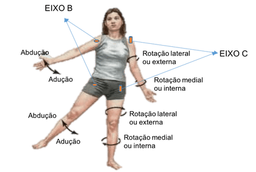
Na posição anatômica, o corpo é referenciado de acordo com três planos mutuamente ortogonais:
O Plano Sagital, divide o corpo simetricamente em laterais direita e esquerda.
As ações articulares ocorrem em torno de um eixo horizontal ou transversal e incluem os movimentos de flexão e extensão.
O Plano Coronal ou Frontal, divide o corpo em partes anterior (ventral) e posterior (dorsal).
As ações articulares ocorrem em torno de um eixo ântero-posterior (AP) e incluem a abdução e a adução.
E por último, o Plano Transversal, Axial ou Horizontal que divide o corpo em partes superior (cranial) e inferior (caudal).
As ações articulares ocorrem em torno de um eixo longitudinal ou vertical e incluem a rotação medial – lateral e pronação – supinação.
Os termos que descrevem os movimento podem ser usados para várias articulações em todo o corpo, sendo que alguns termos são específicos para certas regiões, mas sempre respeitando a posição anatômica.

Descrição dos principais movimentos corporais
Gerais
Flexão = Movimento no plano sagital, em que dois segmentos do corpo (proximal e distal) aproximam-se um do outro.
Hiperflexão = Quando o movimento de flexão ultrapassa a posição anatômica, ou além de sua capacidade normal.
Extensão = Movimento no plano sagital, em que dois segmentos do corpo (proximal e distal) afastam-se um do outro.
Hiperextensão = Quando o movimento de extensão ultrapassa a posição anatômica, ou além de sua capacidade normal.
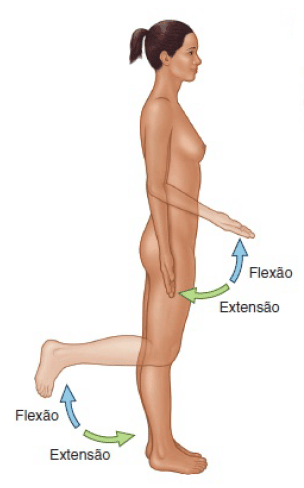
Abdução = Movimento no plano frontal, quando um segmento move-se para longe da linha sagital (média) do corpo.
Hiperabdução = Quando o movimento de abdução ultrapassa a posição anatômica, ou além de sua capacidade normal.
Adução = Movimento no plano frontal, a partir de uma posição de abdução quando o segmento volta para a posição anatômica.
Hiperadução = Quando o movimento de adução ultrapassa a posição anatômica, ou além de sua capacidade normal.
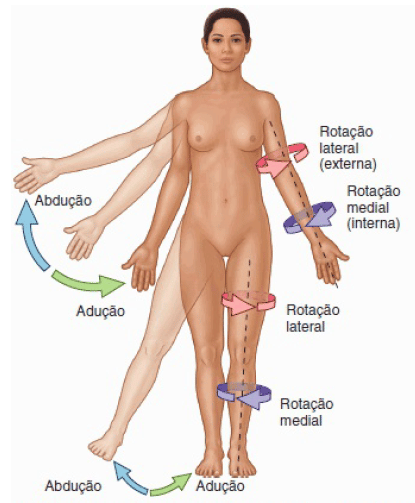
Desvio/Flexão lateral = Movimento no plano frontal em que a estrutura desvia a linha sagital para as laterais direita ou esquerda.
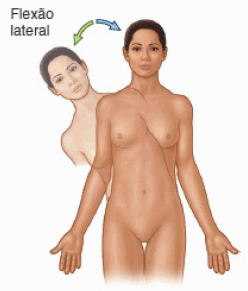
Elevação = Movimento no plano frontal onde a estrutura move-se no sentido superior (para cima ou cranial).
Depressão ou abaixamento = Movimento no plano frontal onde a estrutura move-se no sentido inferior (para baixo ou caudal) ou retorno a posição inicial antes da elevação.
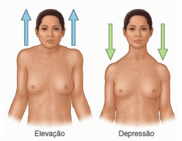
Rotação lateral ou externa = Movimento no plano horizontal, em que a face anterior da estrutura volta-se para o plano lateral do corpo.
Rotação medial ou interna = Movimento no plano horizontal, em que a face anterior da estrutura volta-se para o plano mediano do corpo.
Circundução = Movimento circular de um membro que descreve um cone, em torno de um centro ou de um eixo, combinando os movimentos de flexão, extensão, abdução e adução, ou desvios laterais.
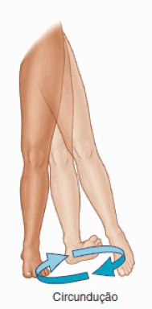
Rotação superior / para cima = Movimento no plano frontal onde a escápula gira superiormente, ao mesmo tempo que se afasta da linha mediana e se eleva.
Rotação inferior / para baixo = Movimento no plano frontal onde a escápula gira inferiormente, ao mesmo tempo que se aproxima da linha mediana e se deprime.
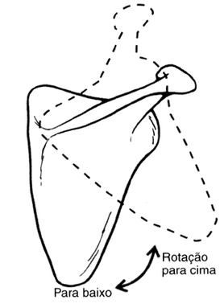
Protração = Movimento no plano horizontal em que o ombro é direcionado para frente.
Retração = Movimento no plano horizontal em que o ombro é direcionado para trás.
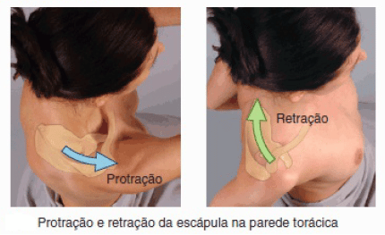
Protusão = É um movimento dianteiro (para frente).
Retrusão = É um movimento de retração (para trás).
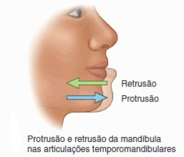
Anteversão = Movimento no plano sagital, onde a estrutura inclina-se para a frente, logo a espinha ilíaca ântero-superior anterioriza-se à sínfise púbica.
Retroversão = Movimento no plano sagital, onde a estrutura inclina-se para trás, logo a espinha ilíaca ântero-superior posterioriza-se à sínfise púbica.
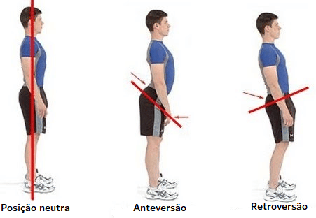
Pronação = Movimento de rotação do antebraço pelo qual a palma da mão torna-se inferior ou posterior.
Supinação = Movimento de rotação do antebraço pelo qual a palma da mão torna-se superior ou anterior.
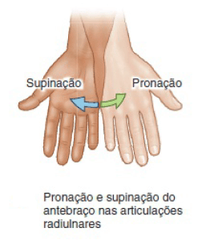
Desvio radial – Flexão radial = Movimento no plano frontal, onde a mão afasta-se da linha mediana do corpo (abdução do punho).
Desvio ulnar – Flexão ulnar = Movimento no plano frontal, onde a mão se aproxima da linha mediana do corpo (adução do punho).
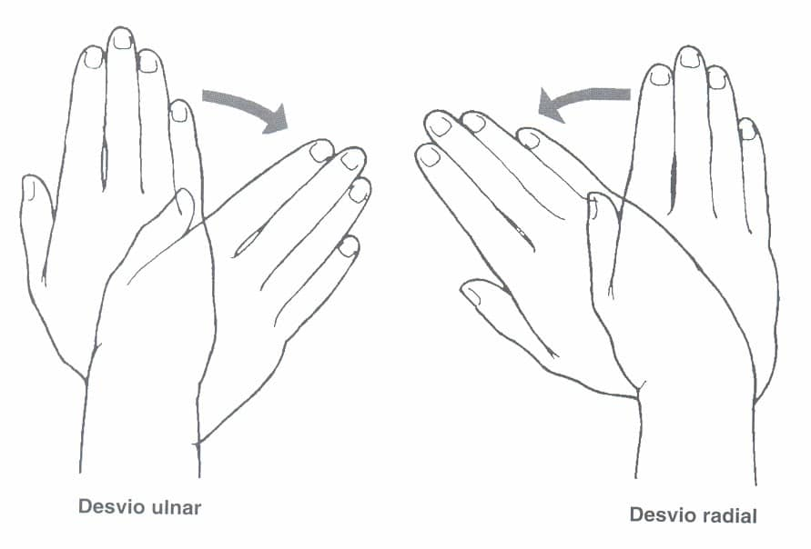
Oposição do polegar = Movimento no plano horizontal, em que ocorre a aproximação das polpas digitais (polegar em relação aos demais dedos) e envolve uma combinação de abdução, circundução e rotação.
Reposição do polegar = Movimento no plano horizontal, em que ocorre o afastamento das polpas digitais, é o inverso da oposição.
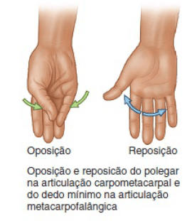
Por regiões
Cabeça ou pescoço
- Circundução da cabeça ou pescoço
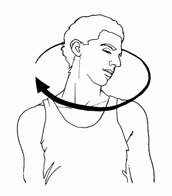
A) Posição anatômica
B) Desvio/Flexão lateral à esquerda da cabeça ou do pescoço
C) Hiperextensão da cabeça ou pescoço
D) Flexão da cabeça ou pescoço
E) Rotação lateral à esquerda da cabeça ou pescoço
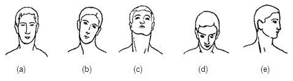
Mandíbula
- Desvio ou Protusão lateral da mandíbula
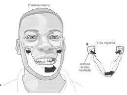
- Elevação e abaixamento da mandíbula
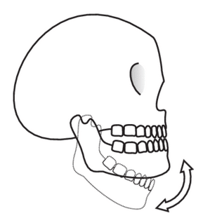
- Retrusão e Protusão da mandíbula
Tronco
- Circundução do tronco
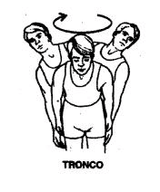
A) Hiperextensão e Flexão do tronco
B) Desvio/Flexão lateral à esquerda e direita do tronco
C) Rotação lateral à esquerda e direita do tronco
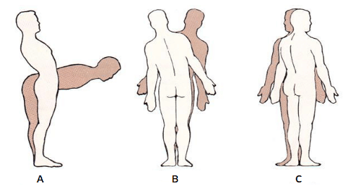
Escápula
A) Abdução ou Protração da escápula
B) Adução ou Retração da escápula
C) Rotação superior ou lateral da escápula
D) Rotação inferior ou medial da escápula
E) Elevação da escápula
F) Depressão ou abaixamento da escápula
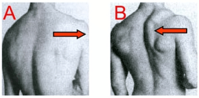
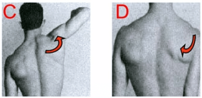
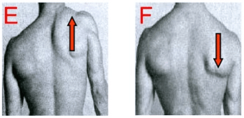
Ombro ou braço
- Flexão do ombro ou braço
- Hiperextensão do ombro ou braço
- Rotação lateral ou externa do ombro ou braço
- Rotação medial ou interna do ombro ou braço
- Abdução do ombro ou braço
- Hiperadução do ombro ou braço
- Circundução do ombro ou braço
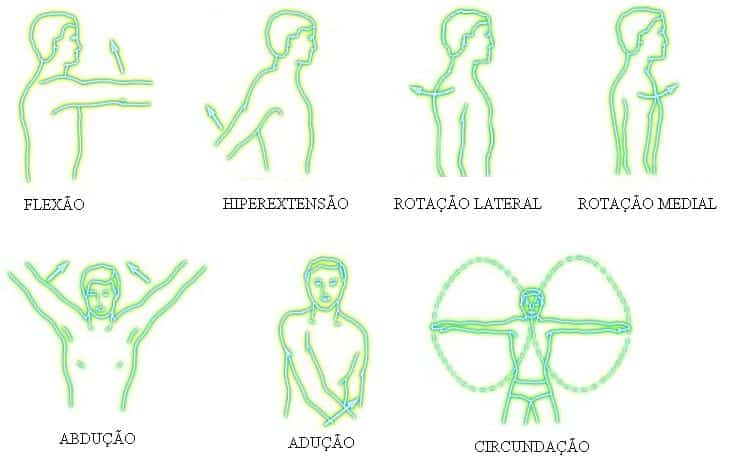
Antebraço ou cotovelo
- Supinação
- Pronação
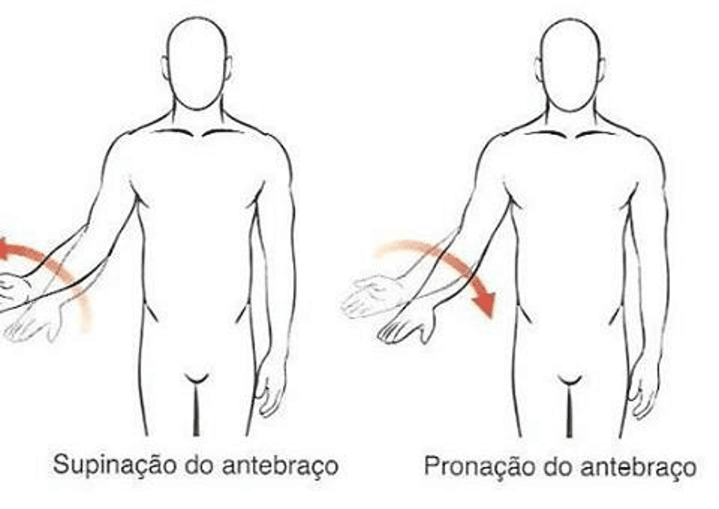
- Extensão do antebraço ou cotovelo
- Flexão do antebraço ou cotovelo
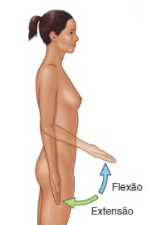
Punho e dedos
- Flexão dos dedos
- Extensão dos dedos
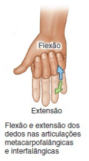
- Hiperextensão do punho ou da mão
- Mão neutra
- Flexão do punho ou da mão
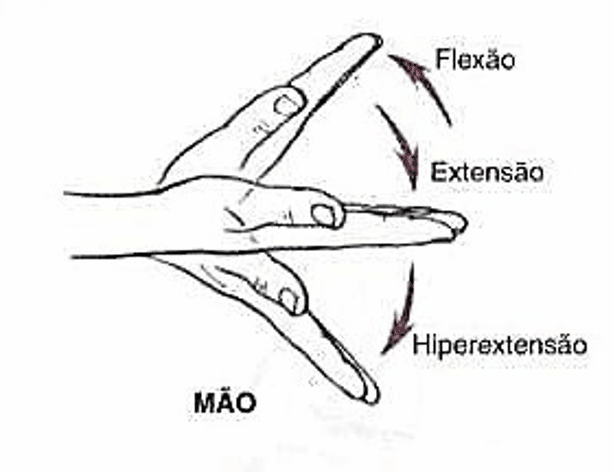
- Circundução do punho
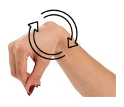
- Circundução do dedo
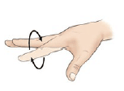
- Oposição dos dedos
- Reposição dos dedos
- Adução do polegar
- Abdução do polegar
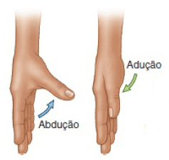
- Desvio radial ou abdução do punho
- Desvio ulnar ou adução do punho
Quadril ou coxa + Pelve
- Flexão do quadril ou da coxa
- Extensão do quadril ou da coxa
- Hiperextensão do quadril ou da coxa
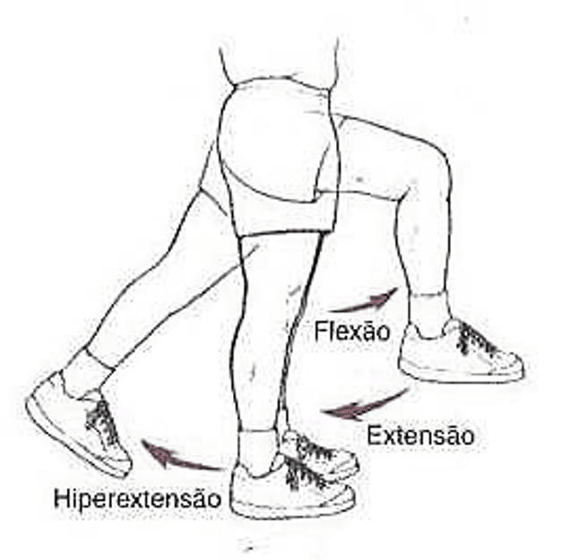
- Abdução do quadril ou da coxa
- Adução do quadril ou da coxa
- Hiperadução do quadril ou da coxa
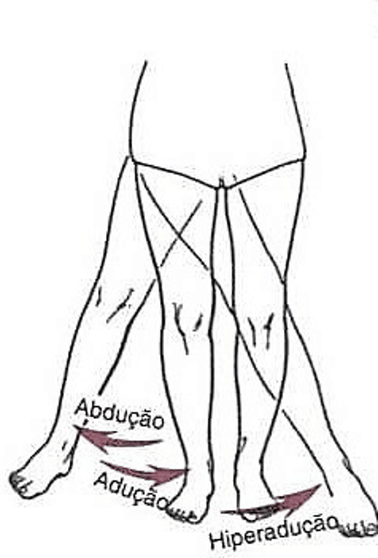
- Rotação interna ou medial da coxa ou do quadril
- Rotação externa ou lateral da coxa ou do quadril
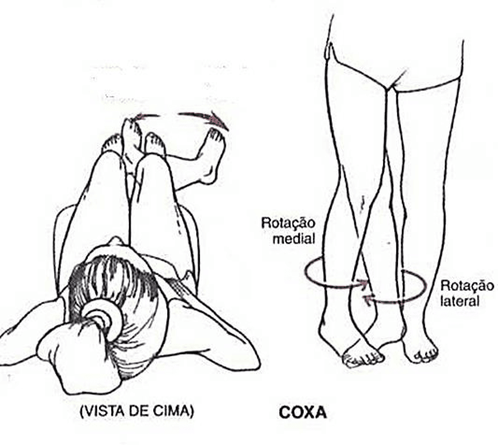
- Circundução do quadril
- Elevação lateral da pelve
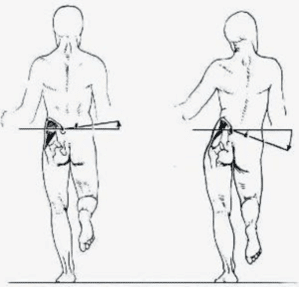
- Anteversão da pelve
- Retroversão da pelve
- Anteversão femoral ou do quadril
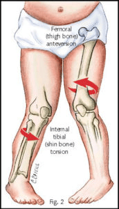
Joelho ou Perna
- Flexão da perna ou do joelho
- Extensão da perna ou do joelho
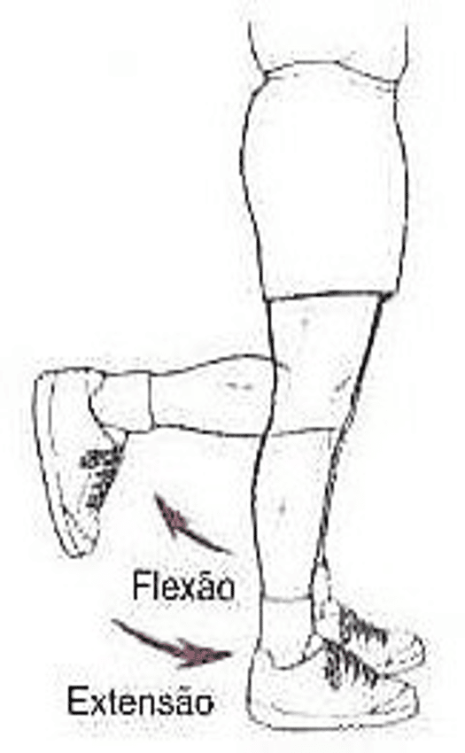
- Rotação medial ou interna da perna ou do joelho
- Rotação lateral ou externa da perna ou do joelho
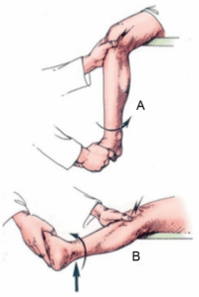
A) Joelho recurvado ou hiperextendido
B) Joelho flexo
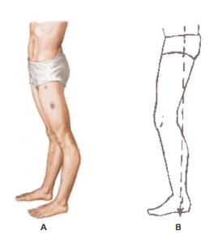
- Joelho valgo
- Joelho normal
- Joelho varo
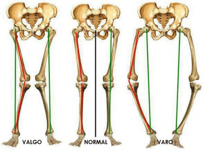
Tornozelo e dedos
- Dorsiflexão
- Flexão plantar
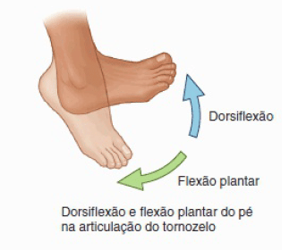
- Eversão
- Inversão
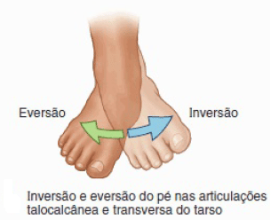
- Circundução do tornozelo
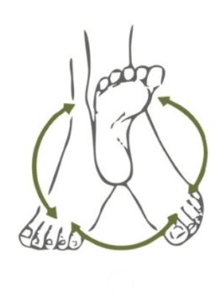
A) Extensão dos dedos
B) Flexão dos dedos
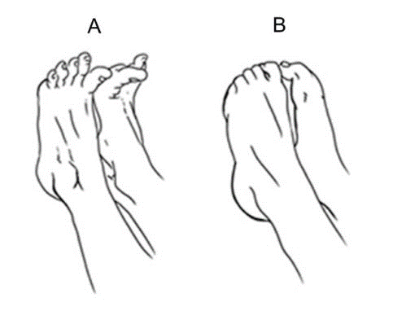
A) Tornozelo valgo (pisada pronada)
B) Posição neutra
C) Tornozelo varo (pisada supinada)
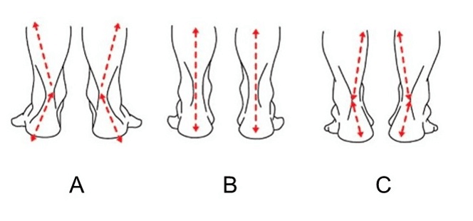